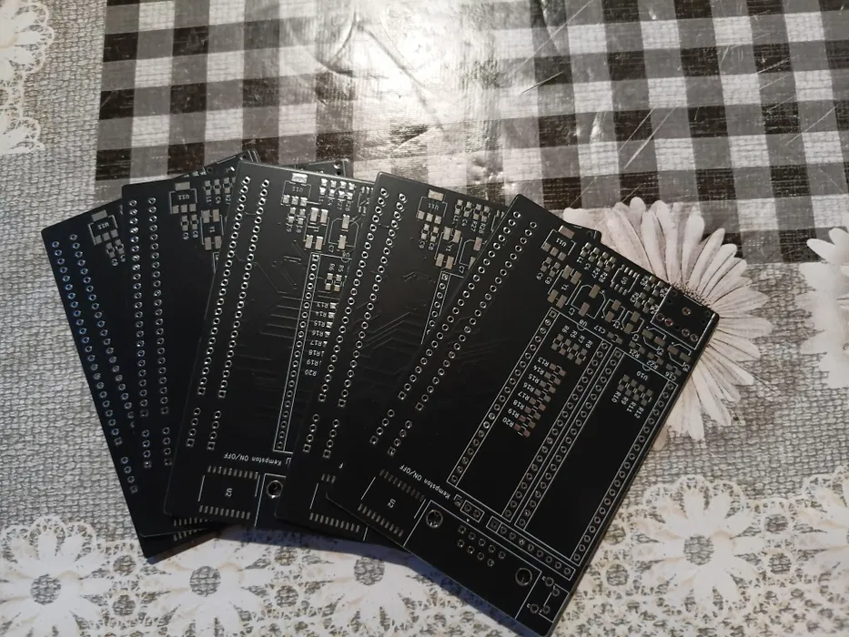

Turbosound + Kempston — це апгрейд, який перетворює ваш ZX Spectrum на повноцінну ретро-ігрову станцію.
Завдяки двом звуковим чипам AY-3-8912 (Turbosound), ви отримуєте значно багатший і глибший звук у сумісних демках та іграх. Це той самий рівень аудіо, який використовувався в топових сценових роботах.
Вбудований інтерфейс Kempston дозволяє підключити джойстик і грати так, як задумували розробники — без клавіатурних компромісів.
Плата легко підключається через стандартний роз’єм розширення і не потребує складної модифікації комп’ютера.
Ідеальний вибір для демосцени, ретро-геймерів та тих, хто хоче вичавити максимум із свого Spectrum.
